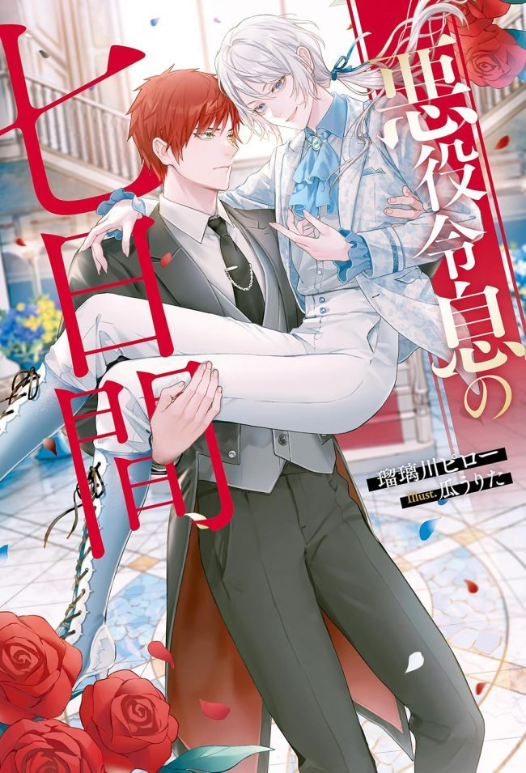

Yo, Ulysses Addinson, de repente recuerdo mi vida anterior y me doy cuenta de que soy el villano del juego para smartphones "Flores del Palacio Real ~Una Doncella del Santuario Sostenida por Rosas de Siete Colores~". Pero lo recuerdo demasiado tarde, y solo quedan siete días para el evento del juego donde seré condenado.
Ya es demasiado tarde cuando me doy cuenta, pero esta es la historia de un joven villano que lucha por salir adelante.